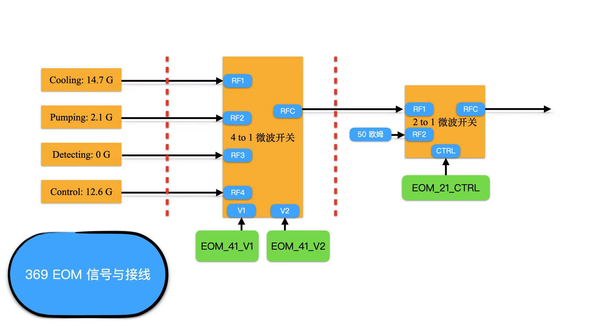
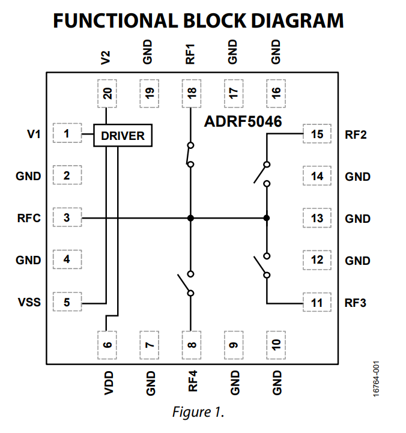

369 光路模块
0. Abstract
369 光路是离子阱时序控制最基本的光路，主要用于实现 离子的 冷却、初始化、读出功能。
本模块封装了 369 光路的这些功能。
下图显示了 ARTIQ 信号通道 与 369 光路连接的主要结构 (暂定 )：

1. 设计原则
- 该模块只添加 369 光路用到的时序控制通道；
- 状态切换模式: off -> cooling ; cooling ->pumpnig; pumping -> control ; control -> detecting ; detecting -> off；
- 尽可能优化开关线路，以在每次切换时，只改动一个开关。
2. 使用示例：
from modules.light_369 import *
class Light369Example1(EnvExperiment):
"""1. 369 光路单次 CPD 循环
"""
def build(self):
self.setattr_device("core")
self.l369 = Light369(self)
self.parameter = Config(default_parameter)
def prepare(self):
"""实验准备阶段，将必要的参数从 config 文件中提取出来， artiq 不支持传递字典格式"""
pass
@rpc(flags={"async"})
def tprint(self, data):
print(data)
@kernel()
def run(self):
# 0. initial
self.core.reset()
self.l369.initial()
# 1. off -> cooling
self.l369.switch_off_to_cool()
delay(self.parameter.Cooling_Time)
# 2. cooling -> pumping
self.l369.switch_cool_to_pump()
delay(self.parameter.Pumping_Time)
# 3. pumping -> controlling (在这一步，插入别的激光器的时序, 如用 with parallel 并行执行)
#
self.l369.switch_pump_to_control()
# 4. controlling -> detecting
with parallel:
self.l369.PMT_on()
self.l369.switch_control_to_detect()
delay(self.parameter.Detecting_Time)
# 5. detecting -> off
with parallel:
self.l369.switch_detect_to_off()
self.l369.PMT_off()
附件：EOM 硬件接线

值得注意的是：
- 4 路微波信号，通过 4 to 1 的微波开关选择性切换，以实现不同的功能；
- 41 微波开关出来的信号进入一个 2 to 1 微波开关，21 开关的主要作用是在 detecting 时，切换到 50 欧姆，增加隔离度。
微波开关接口示意图：4 to 1


微波开关接口示意图：2 to 1